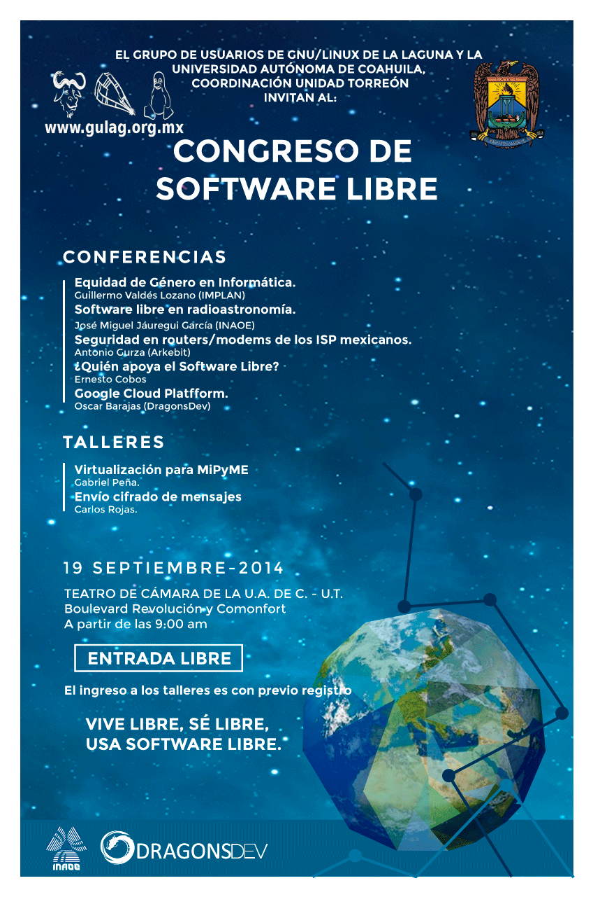

Mejoremos el mundo y nuestras vidas un Hack a la vez.
Una conferencia que impartí gustó tanto que fui invitado a darla en el Instituto Tecnólogico de La Laguna, y como siempre, representando al GULAG.
Una vez más fui invitado a dar una conferencia y un taller en la Escuela de Sistemas de la U.A. de C. Unidad Torreón, todo relacionado con el software libre y siempre representando al GULAG.
Discurso de Federico García Lorca al pueblo de Fuente Vaqueros (Granada) en septiembre de 1931 en la inauguración de la biblioteca de su pueblo:
A partir de éste momento publicaré en mi sitio y aquí.

El pasado 19 de septiembre se llevó a cabo el VIII aniversario del Grupo de Usuarios de GNU/Linux de La Laguna (GULAG), y como siempre se realizó con un ciclo de conferencias de lo mas variado, pero todas girando en torno al software libre.
Con motivo del VIII aniversario del Grupo de Usuarios de GNU/Linux de La Laguna (GULAG), y con el apoyo de la Universidad Autónoma de Coahuila, Cordinación Unidad Torreón, se invita a estudiantes, maestras y maestros, empresarias y empresarios, hackers y público en general al Congreso de Software Libre a celebrarse el 19 de septiembre del presente año, a partir de las 9:00 horas, en el Teatro de Cámara ubicado en el interior del edificio de Coordinación de la Universidad Autónoma de Coahuila, Unidad Torreón, ubicado en Boulevard Revolución y Comonfort, en Torreón, Coahuila.
Se terminaron las vacaciones y ya todos están de regreso para trabajar y/o estudiar. Muchos conservaron de sus vacaciones, si viajaron, recuerdos, fotos y videos; y algunos, por la emoción del momento, lo grabaron con la cámara no de la manera correcta, esto es, inclinada a 90º, 180º o a 270º provocando tortícolis a todos los que les presumen los videos.
Todos podemos hacer la captura de lo que muestra nuestra pantalla (screenshot) con solo presionar la tecla ImprPant con lo que podemos obtener contenido de la pantalla en formato de imagen. Por lógica, lo mismo podemos hacer para capturar lo que vemos en una pagina web. Ya solo resta hacer las ediciones necesarias (recorte, color, etcétera) a la imagen, si son necesarias.
Éste sitio es un fork de MovimientoLibre.
El contenido de las entradas está bajo la licencia CC BY-SA.
El programa está protegido por la licencia GPL versión 2.
La documentación está protegida por la licencia GFDL.